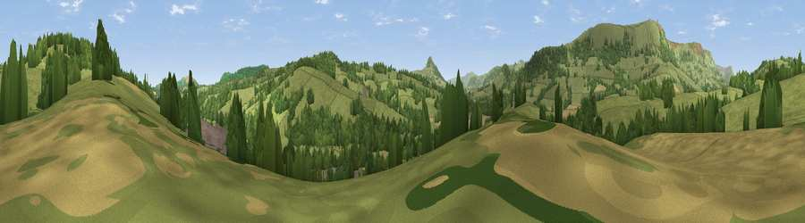

Viewpoint near Walterstone
#30426 in England · top 70% of its area beats it · near WalterstoneWhere it is
The exact computed spot (SO 34425 24175). Click the marker for map links.
The view, rendered

A 360° render of this exact spot computed from the terrain model, tree cover and land cover — summer colours, afternoon light, calibrated against photographs of famous viewpoints. Real trees, hedges and buildings will differ in detail.
The panorama
Grey silhouette: terrain skyline in each direction (720 bearings, Earth curvature and refraction included). Dashed green: skyline with trees (+15 m) and buildings (+8 m) as obstacles. Blue strip: how far the ground is visible on each bearing.
Where the view opens
Wedge length = distance to the farthest visible ground on that bearing (vegetation-aware). Rings at 10, 25 and 50 km.
What fills the view
70% grassland · 21% woodland · 9% cropland
Angular shares of the visible panorama (visual magnitude), not map area. Landscape diversity 0.35 (0–1 Shannon).
Key numbers
More beautiful places nearby
The staircase of upgrades: each row has a higher view potential than everything closer. Driving times are estimates from straight-line distance, calibrated against real road routing — check an actual route before setting out.
| Place | Direction | Drive | Score |
|---|---|---|---|
| Viewpoint near Walterstone | SW · 0 km | ~1 min | 41.0 |
| Viewpoint near Walterstone | SW · 1 km | ~2 min | 43.9 |
| Viewpoint near Clodock | WNW · 3 km | ~8 min | 79.6 |
| Garway Hill | E · 9 km | ~18 min | 84.6 |
| Millennium Hill | ENE · 44 km | ~64 min | 86.9 |
| Worcestershire Beacon | ENE · 47 km | ~68 min | 87.1 |
| Viewpoint near West Quantoxhead | SSW · 85 km | ~109 min | 87.9 |
| Viewpoint near West Quantoxhead | SSW · 85 km | ~110 min | 88.7 |
51.91223, -2.95473 · source: screening · position refined by local search. Computed location — check access rights before visiting.